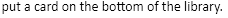
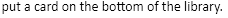

import hashlib
import os
import shutil
import tempfile
import time
REGION_PLAY = Region(7,965,334,57)
REGION_MULLIGAN_KEEP = Region(0,13,175,154)
REGION_CARD_SENT_TO_BOTTOM = Region(1209,283,102,63)
REGION_TEMPORARY_ZONE = Region(1017,199,124,29)
REGION_PUT_ON_THE_BOTTOM_OF_YOUR_LIBRARY = Region(921,181,459,166)
REGION_CHAT_PUT_A_CARD_ON_THE_BOTTOM_OF_THE_LIBRARY = Region(1501,671,398,51)
REGION_CARD_PREVIEW_CAPTURE = Region(1553,110,138,25)
REGION_CONCEDE_MATCH_BUTTON = Region(891,554,133,48)
LOCATION_PLAY = Location(169, 995)
LOCATION_MULLIGAN = Location(47, 141)
LOCATION_TEMPORARY_ZONE_CARD = Location(1195, 382)
LOCATION_PUT_ON_THE_BOTTOM_OF_YOUR_LIBRARY = Location(1118, 430)
LOCATION_FIRST_CARD_IN_HAND = Location(282, 910)
LOCATION_X_CLOSE = Location(1902, 14)
LOCATION_CONCEDE_MATCH = Location(961, 579)
def hash_file(file_path):
hasher = hashlib.md5()
with open(file_path, 'rb') as opened_file:
buf = opened_file.read()
hasher.update(buf)
return hasher.hexdigest()
def main():
TEMP_DIR_PREFIX = time.strftime("MTGO-scry-bug_%Y-%m-%d_%H-%M-%S", time.gmtime())
TEMP_PATH = tempfile.mkdtemp(prefix=TEMP_DIR_PREFIX)
print "TEMP_PATH:", TEMP_PATH
OUTPUT_PATH = os.path.join(TEMP_PATH, 'output')
print "OUTPUT_PATH:", OUTPUT_PATH
HITS_DIR = 'hits'
HITS_PATH = os.path.join(OUTPUT_PATH, HITS_DIR)
print "HITS_PATH:", HITS_PATH
MISSES_DIR = 'misses'
MISSES_PATH = os.path.join(OUTPUT_PATH, MISSES_DIR)
print "MISSES_PATH:", MISSES_PATH
os.mkdir(OUTPUT_PATH)
os.mkdir(HITS_PATH)
os.mkdir(MISSES_PATH)
iterations = 0
hits = 0
while True:
REGION_PLAY.wait()
REGION_PLAY.click(LOCATION_PLAY)
REGION_MULLIGAN_KEEP.wait( )
for i in range(0, 7):
REGION_MULLIGAN_KEEP.wait()
time.sleep(0.5)
REGION_MULLIGAN_KEEP.click(LOCATION_MULLIGAN)
REGION_TEMPORARY_ZONE.wait()
time.sleep(0.1)
click(LOCATION_TEMPORARY_ZONE_CARD)
time.sleep(0.5)
REGION_PUT_ON_THE_BOTTOM_OF_YOUR_LIBRARY.click(LOCATION_PUT_ON_THE_BOTTOM_OF_YOUR_LIBRARY)
REGION_CHAT_PUT_A_CARD_ON_THE_BOTTOM_OF_THE_LIBRARY.wait()
time.sleep(0.1)
card_sent_to_bottom_capture = capture(REGION_CARD_PREVIEW_CAPTURE)
hover(LOCATION_FIRST_CARD_IN_HAND) # Update the preview with the drawn card.
time.sleep(0.5)
card_drawn_capture = capture(REGION_CARD_PREVIEW_CAPTURE)
copy_path = ""
card_sent_to_bottom_hash = hash_file(card_sent_to_bottom_capture)
card_drawn_hash = hash_file(card_drawn_capture)
print "card_sent_to_bottom_hash", card_sent_to_bottom_hash
print "card_drawn_hash", card_drawn_hash
if card_sent_to_bottom_hash == card_drawn_hash:
hits += 1
copy_path = HITS_PATH
else:
copy_path = MISSES_PATH
iterations += 1
print hits, "/", iterations
shutil.move(card_sent_to_bottom_capture, os.path.join(copy_path, str(iterations) +
)
for i in range(0, 7):
REGION_MULLIGAN_KEEP.wait()
time.sleep(0.5)
REGION_MULLIGAN_KEEP.click(LOCATION_MULLIGAN)
REGION_TEMPORARY_ZONE.wait()
time.sleep(0.1)
click(LOCATION_TEMPORARY_ZONE_CARD)
time.sleep(0.5)
REGION_PUT_ON_THE_BOTTOM_OF_YOUR_LIBRARY.click(LOCATION_PUT_ON_THE_BOTTOM_OF_YOUR_LIBRARY)
REGION_CHAT_PUT_A_CARD_ON_THE_BOTTOM_OF_THE_LIBRARY.wait()
time.sleep(0.1)
card_sent_to_bottom_capture = capture(REGION_CARD_PREVIEW_CAPTURE)
hover(LOCATION_FIRST_CARD_IN_HAND) # Update the preview with the drawn card.
time.sleep(0.5)
card_drawn_capture = capture(REGION_CARD_PREVIEW_CAPTURE)
copy_path = ""
card_sent_to_bottom_hash = hash_file(card_sent_to_bottom_capture)
card_drawn_hash = hash_file(card_drawn_capture)
print "card_sent_to_bottom_hash", card_sent_to_bottom_hash
print "card_drawn_hash", card_drawn_hash
if card_sent_to_bottom_hash == card_drawn_hash:
hits += 1
copy_path = HITS_PATH
else:
copy_path = MISSES_PATH
iterations += 1
print hits, "/", iterations
shutil.move(card_sent_to_bottom_capture, os.path.join(copy_path, str(iterations) +  ))
shutil.move(card_drawn_capture, os.path.join(copy_path, str(iterations) +
))
shutil.move(card_drawn_capture, os.path.join(copy_path, str(iterations) +  ))
click(LOCATION_X_CLOSE)
region_concede_match_button.wait()
time.sleep(0.1)
region_concede_match_button.click(LOCATION_CONCEDE_MATCH)
if __name__ == '__main__':
main()
))
click(LOCATION_X_CLOSE)
region_concede_match_button.wait()
time.sleep(0.1)
region_concede_match_button.click(LOCATION_CONCEDE_MATCH)
if __name__ == '__main__':
main()